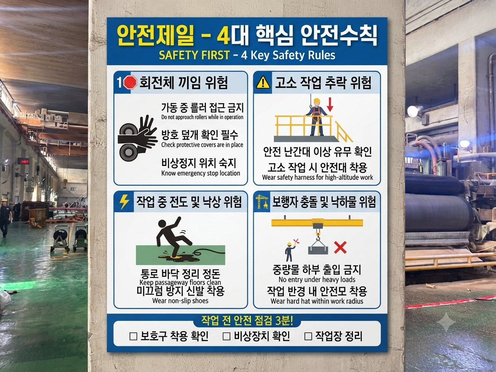
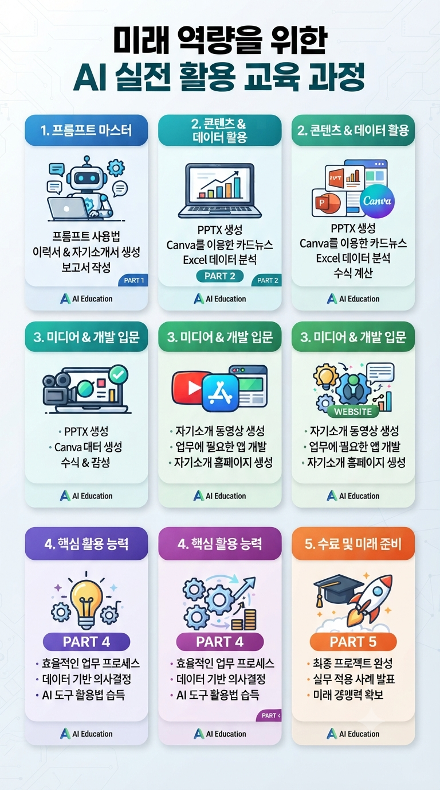

01 · 방향
품질검사 보조
정해진 기준과 순서에 따라 확인하고, 관찰한 내용을 정확히 전달하는 업무에 관심이 있습니다.
새로운 기술을 배우고 적용하는 것을 즐기며, 동료들과 원활하게 소통하는 태도를 중요하게 생각합니다. 생산·관리 분야에 관심을 두고 직무 역량을 쌓고 있습니다.
정해진 기준과 순서에 따라 확인하고, 관찰한 내용을 정확히 전달하는 업무에 관심이 있습니다.
어려운 부분을 임의로 넘기지 않고 원인을 찾아 수정했던 실습 경험을 바탕으로 꼼꼼함을 키우고 있습니다.
모르는 내용을 질문하고, 배운 점을 다음 작업에 적용하며 팀과 함께 성장하겠습니다.
전기기능사 실기 연습 중 배선이 잘못되어 회로가 동작하지 않았던 경험이 있습니다. 문제를 발견한 뒤 원인을 찾아 배선을 수정하며, 결과가 예상과 다를 때 차분히 확인하는 태도를 배웠습니다.
작업이 되지 않는 상황에서 배선 상태를 다시 확인하고 잘못 연결한 부분을 수정했습니다. 작은 오류도 결과에 영향을 줄 수 있다는 점을 체감했고, 품질 확인 업무에서도 기준을 따라 꼼꼼히 살피겠습니다.

안전 수칙을 지키는 습관은 품질과 작업을 지키는 기본이라고 생각합니다. 작업 전 보호구와 설비 상태를 살피고, 위험이나 이상을 발견하면 작업을 멈추고 담당자에게 알리는 태도를 갖추겠습니다.

제공된 안전 포스터를 통해 설비와 안전장치 확인, 보행자 통로 이용, 작업장 정리정돈의 중요성을 다시 확인했습니다. 현장에서는 회사의 기준과 담당자의 지시에 따라 행동하겠습니다.
새로운 도구와 기술을 익히고 실제 작업에 연결하는 과정을 중요하게 생각합니다. 아래 이미지는 제공된 AI 활용 교육 과정 자료입니다.

교육 과정에서 다루는 프롬프트 활용, 데이터 분석, 콘텐츠 제작 등은 계속 배워갈 영역입니다. 이 페이지에서는 교육 안내 자료를 소개하며, 미완료 과정이나 자격을 취득한 사실로 표현하지 않습니다.
※ 자료 속 교육 항목은 학습 안내 이미지이며, 이수 여부를 나타내지 않습니다.
제공된 자기소개 영상을 재생할 수 있습니다.
입사 후에는 검사 기준과 안전 수칙, 기록 방법을 먼저 정확히 익히겠습니다. 판단이 어려운 부분이나 이상 사항은 담당자에게 확인하고, 맡은 업무를 꾸준하고 책임감 있게 수행하겠습니다.
검사 순서와 안전 수칙을 정확히 배우겠습니다.
결과를 빠뜨리지 않고 정확하게 기록하겠습니다.
임의로 판단하지 않고 질문과 보고를 실천하겠습니다.